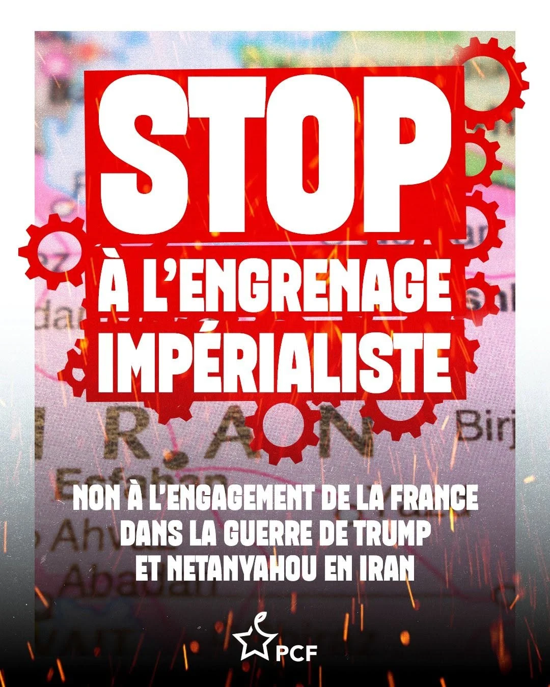

Publication relayée par le PCF 79
Le PCF s’oppose à l’engagement de la France dans la guerre en Iran
Date de mise à jour indiquée par Facebook · 3 mars 2026
Texte de la publication · PCF national et PCF Monde
❌️ Le PCF s’oppose fermement à tout engagement de la France dans la guerre déclenchée par Donald Trump et Benyamin Netanyahou contre l’Iran. Nous dénonçons la volonté d’Emmanuel Macron de « rehausser la posture » française dans le Golfe et refusons toute participation militaire sans débat et vote du Parlement.
🚩 Le PCF condamne à la fois l’agression militaire en cours et la dictature des mollahs, ainsi que les frappes iraniennes visant les infrastructures civiles et les populations. Nous demandons un cessez-le-feu immédiat, le respect du droit international, la souveraineté du peuple iranien et l’ouverture d’un large front des forces progressistes en Iran.
🕊 Refusant toute escalade et toute inféodation aux intérêts des États-Unis et des monarchies du Golfe, le PCF demande un débat parlementaire et revendique, pour la France, une politique étrangère indépendante portant la voix de la paix.
🗞 Retrouvez le communiqué complet en commentaire.

Sources
PCF national et PCF Monde · publication relayée par le PCF 79 · bibliothèque Facebook · AR-0002-FB-00847
À lire aussi · Iran. Les députés communistes appellent à un cessez-le-feu